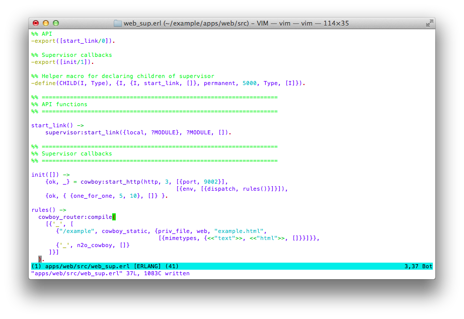

Sat 02 May 2020, tags: ErlangN2OTutorial
Re-posting from 2014-09-24
It's a time to learn more N2O. In this article we will show how to render templates using different techniques:
- Static html template
- N2O record-based templates
- Erlydtl templates
Environment
For this example, we will use a project we have created in the previous tutorial. A directory structure will be like that:
example|master⚡ ⇒ tree . . ├── apps │ └── web │ ├── ebin │ └── src │ ├── index.erl │ ├── routes.erl │ ├── web.app.src │ ├── web_app.erl │ └── web_sup.erl ├── deps ├── rebar └── rebar.config
Static html
This method will be useful in case if you want to have some static files, but do not want to run a web-server on the development machine.
For routing and handling requests N2O is using the cowboy web server, so rendering a static html file basically will be through configuring a cowboy handler. For this step we should create an HTML file in the priv directory of our web app and add route to the routes map.
Create a directory and file:
$ mkdir apps/web/priv # create a 'priv' directory $ touch apps/web/priv/example.html # create an HTML file $ echo "<h1>Example page</h1>" > apps/web/priv/example.html # insert content
As you remember we defined routes in web_sup:rules/0 function. So let's go and add our example page to the routes map.
$ vim apps/web/src/web_sup.erl
rules() ->
cowboy_router:compile(
[{'_', [
{"/example", % handling url
cowboy_static, % cowboy handler
{priv_file, web, "example.html", % a place where the file is saved
[
{mimetypes, {<<"text">>, <<"html">>, []}} % mime type
]
}
},
{'_', n2o_cowboy, []}
]}]
).
A 'cowboy_router:compile/1' is accepting a list of tuples with domain + routes definitions.

Well, it's done. Let's compile our project, run and check it out in browser by http://localhost:8002/example url.
$ ./rebar compile $ erl -name "web@$(hostname)" -pa deps/*/ebin -pa apps/*/ebin -boot start_sasl -s web_app start

Links
How to create a page using Nitrogen templates read in the next part: N2O templates. Nitrogen
Comments !